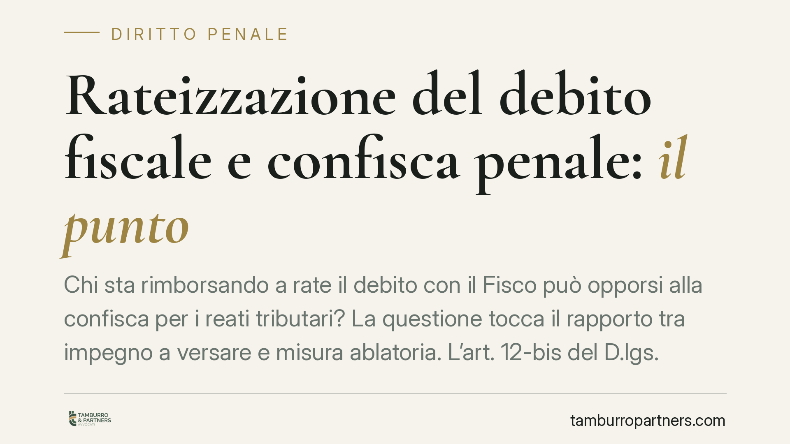

Rateizzazione del debito fiscale e confisca penale: il punto
Chi sta rimborsando a rate il debito con il Fisco può opporsi alla confisca per i reati tributari? La questione tocca il rapporto tra impegno a versare e misura ablatoria. L'art. 12-bis del D.lgs. 74/2000 fissa una regola precisa, ma la sua applicazione dipende dalla situazione concreta e dalla valutazione del giudice sul rischio che il patrimonio venga disperso.

Il tema
Nei procedimenti per reati tributari la confisca è una conseguenza quasi automatica della condanna. Colpisce il profitto del reato o, quando questo non è aggredibile direttamente, beni di valore equivalente (cosiddetta confisca per equivalente). Il contribuente che, nel frattempo, ha concordato con l'Agenzia delle Entrate un piano di rateizzazione e lo sta rispettando si trova davanti a una domanda ricorrente: quel pagamento rateale incide sulla confisca?
Una precisazione metodologica. In rete circola il riferimento a una pronuncia della Cassazione Penale (Sez. III) che affronterebbe questo punto. Non essendoci, allo stato, modo di verificarne gli estremi su fonte ufficiale (CED Cassazione/Italgiure), evitiamo di citare numero e anno di una sentenza come se fosse consolidata. Di seguito ragioniamo sul dato normativo certo e sull'orientamento interpretativo prevalente.
Inquadramento normativo
La norma di riferimento è l'art. 12-bis del D.lgs. 10 marzo 2000, n. 74, introdotto per disciplinare la confisca nei reati tributari. Il secondo comma stabilisce che "La confisca non opera per la parte che il contribuente si impegna a versare all'erario anche in presenza di sequestro".
La ratio è chiara: lo Stato ha interesse a recuperare il tributo evaso più che ad acquisire beni. Se il contribuente si impegna a pagare, la confisca non deve sovrapporsi a quel recupero, perché ne deriverebbe una duplicazione del prelievo. La misura ablatoria resta però operante sulla quota di profitto che non viene coperta dall'impegno di versamento.
Su questa cornice si innesta un orientamento interpretativo che individua un limite. La non operatività della confisca legata all'impegno di pagamento non è incondizionata: il giudice deve verificare che non sussista un concreto pericolo di dispersione del patrimonio. In altri termini, l'impegno a versare va preso sul serio quando è credibile e in corso di esecuzione; non può diventare uno strumento per guadagnare tempo e sottrarre beni. Questo limite non discende da una singola pronuncia isolata, ma da una lettura sistematica della norma che richiede sempre una motivazione in concreto da parte del giudice.
Implicazioni pratiche
Per il contribuente imputato o condannato la posizione va scomposta in due parti.
La parte coperta dall'impegno di versamento. Sulla quota che il contribuente si impegna a versare, e che corrisponde al piano di rateizzazione concordato, la confisca non opera. Il pagamento rateale regolare rende quella porzione del debito "neutralizzata" rispetto alla misura ablatoria, perché destinata comunque all'erario.
La parte residua. La quota di profitto illecito che eccede l'impegno di versamento resta aggredibile. La rateizzazione, da sola, non estingue la confisca sull'intero importo: copre solo ciò che si è effettivamente impegnati a restituire.
Attenzione al presupposto della regolarità. L'effetto limitativo presuppone un impegno serio e un adempimento effettivo. Il mancato pagamento delle rate, o la decadenza dal piano concordato, fa venir meno la copertura e riapre la strada alla confisca sulle somme non versate.
Resta inoltre lo spazio di valutazione del giudice sul pericolo di dispersione. È un giudizio discrezionale che si fonda su elementi concreti: condotta del debitore, movimentazioni patrimoniali sospette, consistenza e liquidabilità dei beni. Un rischio concreto e documentato può giustificare il mantenimento della misura anche in presenza di un piano di rientro formalmente attivo.
Cosa fare in concreto
- Documentate il piano di rateizzazione. Conservate l'atto di adesione, il prospetto delle rate e le ricevute di pagamento: sono la prova dell'impegno effettivo verso l'erario.
- Rispettate le scadenze senza interruzioni. La decadenza dal piano fa cadere la protezione dell'art. 12-bis sulle somme residue; un solo inadempimento rilevante può compromettere la posizione.
- Quantificate la parte residua aggredibile. Confrontate il profitto contestato con l'importo oggetto di impegno: solo la differenza resta esposta alla confisca.
- Portate in giudizio il tema del pericolo di dispersione. È sul punto che si gioca la discrezionalità del giudice: una motivazione generica è censurabile, ma va contestata con argomenti e dati.
- Verificate gli estremi di ogni precedente prima di invocarlo. Riferimenti giurisprudenziali non controllati su fonte ufficiale indeboliscono la difesa.
La valutazione sul pericolo di dispersione è discrezionale e richiede un'analisi tecnica della posizione patrimoniale e processuale, da condurre caso per caso.
---
Contributo informativo a cura di Tamburro & Partners - Avv. Giuseppe Tamburro. Non costituisce parere legale.
Ogni condominio ha una storia a sé.
Se gestisci un'amministrazione e vuoi un confronto su una specifica questione condominiale, scrivi allo studio. Ti rispondiamo entro un giorno lavorativo.